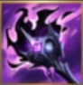
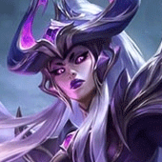
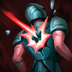

核心裝備

黑焰火炬ARAM 容易持續命中多人，燃燒與技能加速讓長時間消耗更穩。
 無限寶珠
無限寶珠提高低血斬殺能力，配合大絕的單點爆發非常契合。
 死亡之帽
死亡之帽中後期直接放大所有技能傷害與處決壓力。
 虛空之杖
虛空之杖敵方開始堆魔抗後仍能維持對前排與後排的威脅。
 中婭沙漏
中婭沙漏被刺客貼臉或交完大絕後可用金身拖到第二輪技能。

Syndra · 長距控場／單點爆發型法師
先用 1 技安全疊碎片與留球，不要每顆球都立刻用掉。3 技是核心保命與開戰技能，沒把握時寧可留著反突進；大絕前盡量讓地面有更多黑暗星體，才能把單點爆發拉滿。
本站評級理由：星朵拉在狹窄單線能持續用 1 技累積碎片與佈球，1+3 技的遠距暈眩對五人站位威脅很大；7.2 還把 3 技推動黑暗星體的距離由 7.2 提高到 7.5，讓開戰與反開更穩。
近期官方未列星朵拉標準 ARAM 專屬百分比修正；7.2 將 3 技推動黑暗星體的最大距離 7.2→7.5。

ARAM 容易持續命中多人，燃燒與技能加速讓長時間消耗更穩。
提高低血斬殺能力，配合大絕的單點爆發非常契合。
中後期直接放大所有技能傷害與處決壓力。
敵方開始堆魔抗後仍能維持對前排與後排的威脅。
被刺客貼臉或交完大絕後可用金身拖到第二輪技能。

補魔力與法術輸出，讓前中期可以更放心用技能疊碎片。

升級後提高法穿，放大中後期爆發。
五人單線很容易反覆碰到低血目標，長局能持續堆高收割傷害。

暈眩或緩速後補額外真實傷害，與 1+3 控制連段契合。
對低血量目標補上額外爆發，強化收割能力。
ARAM 擊殺助攻密集，能穩定累積法強。
技能加速提高佈球、暈眩與大絕前的循環。

沒有位移，閃現是最重要的保命與調整 3 技角度工具。

被突進切到時多一層容錯，爭取推開目標或等中婭。
1 技 > 3 技 > 2 技
ARAM 開局三個基礎技能各點 1 級，之後主升 1 技、次升 3 技；大絕能點就點。
1 技以安全命中英雄為主，既能消耗又能加快碎片成長。3 技冷卻長，不要只為了打一點傷害就空交。
核心裝成形後，利用地上的球找 1+3 遠距暈眩。抓到一名脆皮就能快速轉成 5 打 4，但沒視野時要保留 3 技防突進。
大絕前先確認場上球數與敵方保命技能。能直接秒主力就果斷交，否則用 1+3 控多人通常比硬丟大絕打前排更有價值。
7.2b 提高 Echo 傷害並降冷卻，可替換黑焰火炬走更純爆發。
 女妖面紗
女妖面紗可替換中婭或一件輸出裝，提高站位安全。
可替換一件傷害裝處理大量護盾。
看遊戲卡片下方分類 → 點相同分類 → 看左側 S+／S／A。
一技能高頻製造球體，三技能與大絕負責爆發，技能增幅利用率非常高。
投射物、技能暴擊、大絕雙放與投射技能加速都能直接放大星朵拉。
一加三的遠距暈眩是團戰關鍵，控制增幅能提高抓人成功率。
多技能連招容易連續命中，能快速啟動雷霆系列額外傷害。
高頻製造球體需要魔力支撐，魔力循環能改善長團輸出。
沒有位移，跑速能幫助維持球體施放距離並躲避強開。
7.2b ARAM S 第六批：星朵拉同步 7.2 三技球體推進距離強化，並把 7.2b 盧登強化列為脆皮陣容替代方案。
ARAM 使用獨立於召喚峽谷的資料集；本站會把官方模式平衡、單線 5v5 特性與出裝／符文適配分開判斷，而不是直接複製峽谷配置。